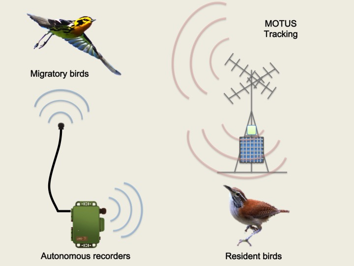
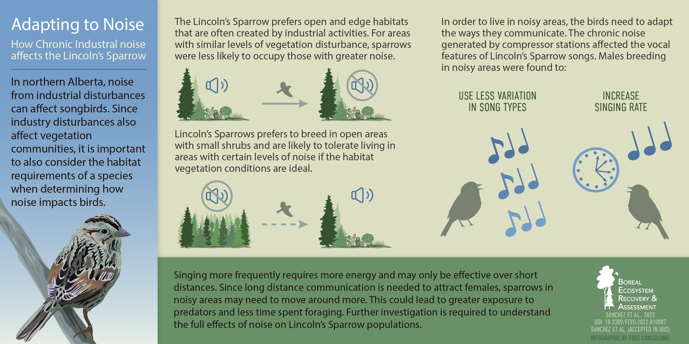

This is a description of current and past projects.
Avian biodiversity in Earth’s most imperilled ecosystem, the tropical dry forest: innovative strategies for conservation monitoring of migratory and resident birds
MITACS Accelerate project: We propose to combine cutting-edge technologies in bioacoustic monitoring and MOTUS tracking systems to monitor migratory and resident birds in an imperiled ecosystem: the tropical dry forest. We will survey migratory and resident bird populations using ground-level bioacoustic monitoring and acoustic recordings of migratory flight calls. At the same time, we will use MOTUS tracking system to monitor winter movements of migratory birds. Our findings will provide critical information o n the population biology, movement ecology, and behavioural biology of both year-round and migratory birds in the largest remnant of tropical dry forest, and provide a key connection between conservation efforts in Canada with those in Costa Rica.
Funders and Collaborators: Birds Canada, Wildlife Acoustics, GDFCF.
Variation in song characteristics and responses to anthropogenic noise of Lincoln’s Sparrow (Melospiza lincolnii) in the boreal forest
Ph.D. Thesis: The study of avian vocalizations intrigues humans in many ways, in part because song production has many similarities with human speech. Since the development of technologies to record and analyze songs, the study of avian vocalizations has provided insights into song learning and its function in animal communication. Past studies showed that songbirds can adapt their songs both in evolutionary time and within their lifetimes. In recent years, there has been increasing awareness about the effect of anthropogenic noise on animals that rely on acoustic signals for communication. The general responses to noise described for birds in the field are a decrease of species richness close to the noise source, changes in avian assemblages, and behavioural changes in even tolerant species. The main objective of this thesis was to investigate what factors influence the persistence of a common sparrow species, the Lincoln’s Sparrow (Melospiza lincolnii), in environments modified by industrial activities, particularly with noise. The objectives of my thesis were to: 1) quantify the geographic variation of Lincoln’s Sparrow songs and the variation associated with vegetation structure; 2) determine if the occupancy of Lincoln’s Sparrow differs in areas with industrial noise compared to less disturbed, quiet areas; and 3) identify which vocal traits are associated with persistence of Lincoln’s Sparrow in noisy environments.
